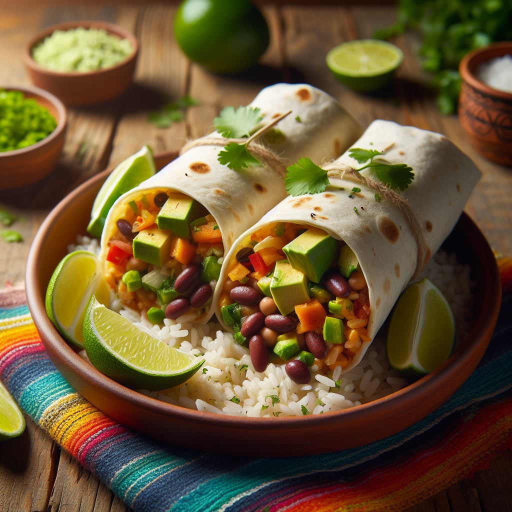

Burritos Vegetarianos
Descripción
Burritos veganos rellenos de sabrosos ingredientes vegetales.
Ingredientes
- Harina de trigo integral
- frijoles negros
- Arroz Integral
- Pimenton
- Espinacas
- Aguacate
- Cebolla
- Tomates Cherry
- Salsa de Tomate
- Cilantro
Preparacion
Precalienta el horno y mezcla la harina con agua, aceite, sal y especias para hacer la masa. Divide la masa en porciones, forma los burritos y añade los ingredientes rellenos. Hornea hasta que estén dorados.